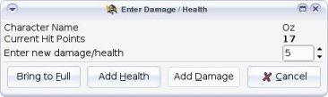
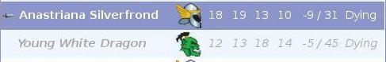
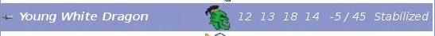

Administrar los puntos de vida
Cuando un personaje recibe daños en combate, clique sobre
él en la lista, despues clique sobre en el botón
Daños de la barra de implementos.
Escriba los daños y clique en el botón de
Daños.
Note que esta acción no cambia en absoluto el orden
en el cual los personajes se encuuentren.

Cuando un personaje recibe cuidados, clique igualmente en el
botón de Daños en la barra de implementos.
Enseguida entre el cantitad de puntos de vida que los
cuidados profieren y finalmente, clique en el botón
Cuidados.
Un personaje puede también puede sér recuperado a su
número máximo de puntos de viva clicando en
el botón Máximo.
Idea :
Usted puede someter a golpes (daños) ó cuidados
a un grupo clicando sobre todos los personajes afectados y
después en el botón golpes (daños).
Cuando un personaje está Agonisando (quire decir que
sus puntos de vida son entre -1 y -9, Turn Watcher la sangrea
de un puntos de vida en cada raund, y es de manera automática
(hasta un momento que se estabiliza ó muere — ver
a continuación).

Cuando un personaje Moribundo es estabilizado,
seleccione
en el menú . El
statuto será cambiado del Moribundo a
Estabilizado.
Turn Watcher dejará de hacer sangrar al personaje
a menos que el resista de nuevo a los daños.
Usted podra de igual manera sanar al personaje
de modo que el tenga cero (0) ó mas
puntos de vida y asi evitar el sangrado.

Cuando un personaje llega a menos de diez (-10) puntos
de vida, Turn Watcher lo da por Muerto de
manera automática y el es atontado.
Note que por defecto, Turn Watcher no dá
el turno a un personaje Muerto.
Usted puede eliminar un personaje muerto de su
lista, clicando encima y clicando en el botón
Borrar de la barra de implementos.
Idea :
Usted puede cambiar Turn Watcher asi para dar un
turno a los personajes muertos.
Este funciona con la ayuda de la bandera en el menú
.

|